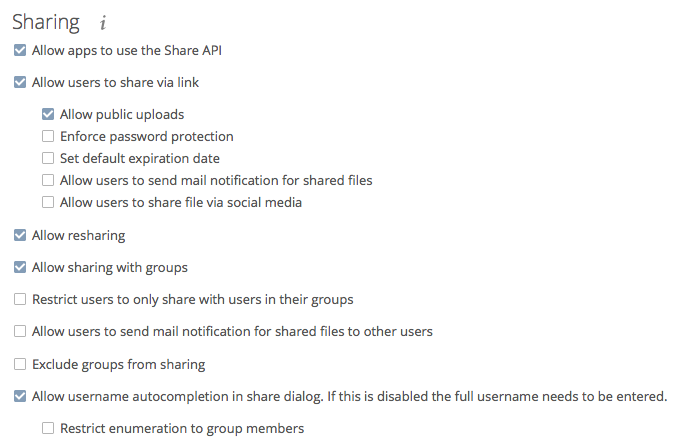

File Sharing¶
The sharing policy is configured on the Admin page in the “Sharing” section.

From this section, ownCloud users can:
- Share files with their ownCloud groups and other users on the same ownCloud server
- Share files with ownCloud users on other ownCloud servers
- Create public shares for people who are not ownCloud users.
You have control of a number of user permissions on file shares:
- Allow users to share files
- Allow users to create public shares
- Require a password on public shares
- Allow public uploads to public shares
- Require an expiration date on public share links
- Allow resharing
- Restrict sharing to group members only
- Allow email notifications of new public shares
- Exclude groups from creating shares
Note
ownCloud Enterprise includes a Share Link Password Policy app; see the Password Policy documentation.
Settings Explained¶
Enforce password protection¶
Check this option to force users to set a password on all public share links. This does not apply to local user and group shares.
Allow public uploads¶
Check this option to allow anyone to upload files to public shares.
Allow users to send mail notification for shared files¶
Check this option to enable sending notifications from ownCloud. When clicked, the administrator can choose the language for public mail notifications for shared files.

What this means is that email notifications will be sent in the language of the user that shared an item. By default the language is the share owner’s language. However, it can be changed to any of the currently available languages. It is also possible to change this setting on the command-line by using the occ config:app:set command, as in this example:
sudo -u www-data php occ config:app:set core shareapi_public_notification_lang --value '<language code>'
Note
In the above example “<language code>” is an ISO 3166-1 alpha-2 two-letter country code, such as ru, gb, us, and au.
Note
To use this functionality, your ownCloud server must be configured to send mail.
Set default expiration date¶
Check this option to set a default expiration date on public shares.
Allow resharing¶
Check this option to enable users to re-share files shared with them.
Allow users to send mail notification for shared files¶
Check this option to enable users to send an email notification to every ownCloud user that the file is shared with.
Exclude groups from sharing¶
Check this option to prevent members of specific groups from creating any file shares in those groups. When you check this, you’ll get a dropdown list of all your groups to choose from. Members of excluded groups can still receive shares, but not create any.
Restrict enumeration to group members¶
Check this option to restrict auto-completion of ownCloud usernames to only those users who are members of the same group(s) that the user is in.
Note
ownCloud does not preserve the mtime (modification time) of directories, though it does update the mtimes on files. See Wrong folder date when syncing for discussion of this.
Transferring Files to Another User¶
You may transfer files from one user to another with occ.
The command transfers either all or a limited set of files from one user to another.
It also transfers the shares and metadata info associated with those files (shares, tags, and comments, etc).
This is useful when you have to transfer a user’s files to another user before you delete them.
Important
Trashbin contents are not transferred.
Here is an example of how to transfer all files from one user to another.
occ files:transfer-ownership <source-user> <destination-user>
Here is an example of how to transfer a limited group a single folder from one user to another.
In it, folder/to/move, and any file and folder inside it will be moved to <destination-user>.
sudo -u www-data php occ files:transfer-ownership --path="folder/to/move" <source-user> <destination-user>
When using this command keep two things in mind:
- The directory provided to the
--pathswitch must exist insidedata/<source-user>/files. - The directory (and its contents) won’t be moved as is between the users. It’ll be moved inside the destination user’s
filesdirectory, and placed in a directory which follows the format:transferred from <source-user> on <timestamp>. Using the example above, it will be stored under:data/<destination-user>/files/transferred from <source-user> on 20170426_124510/
(See Using occ core commands for a complete occ reference.)